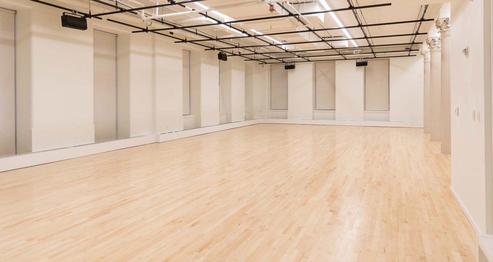
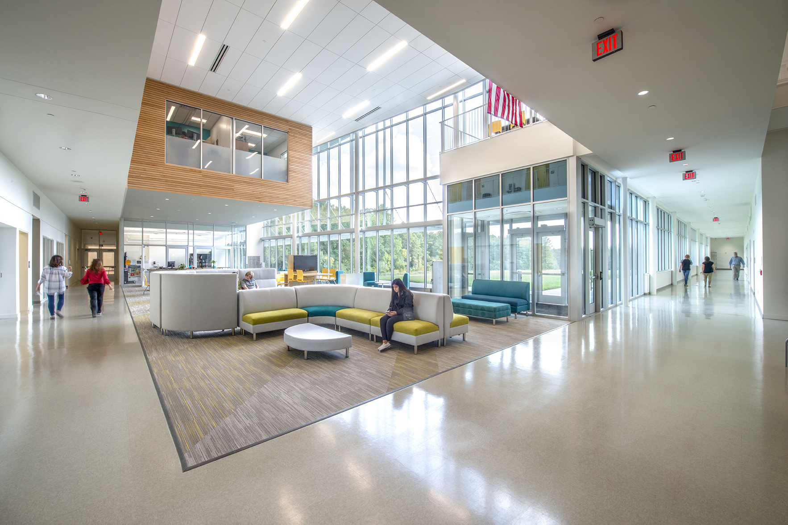
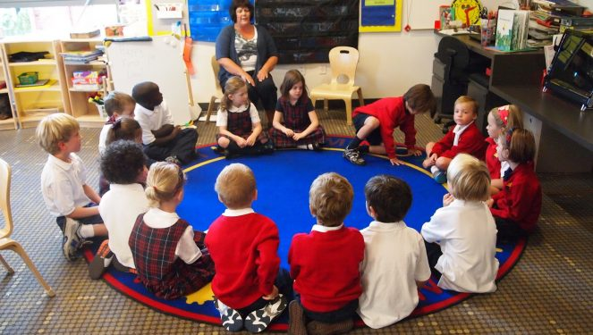
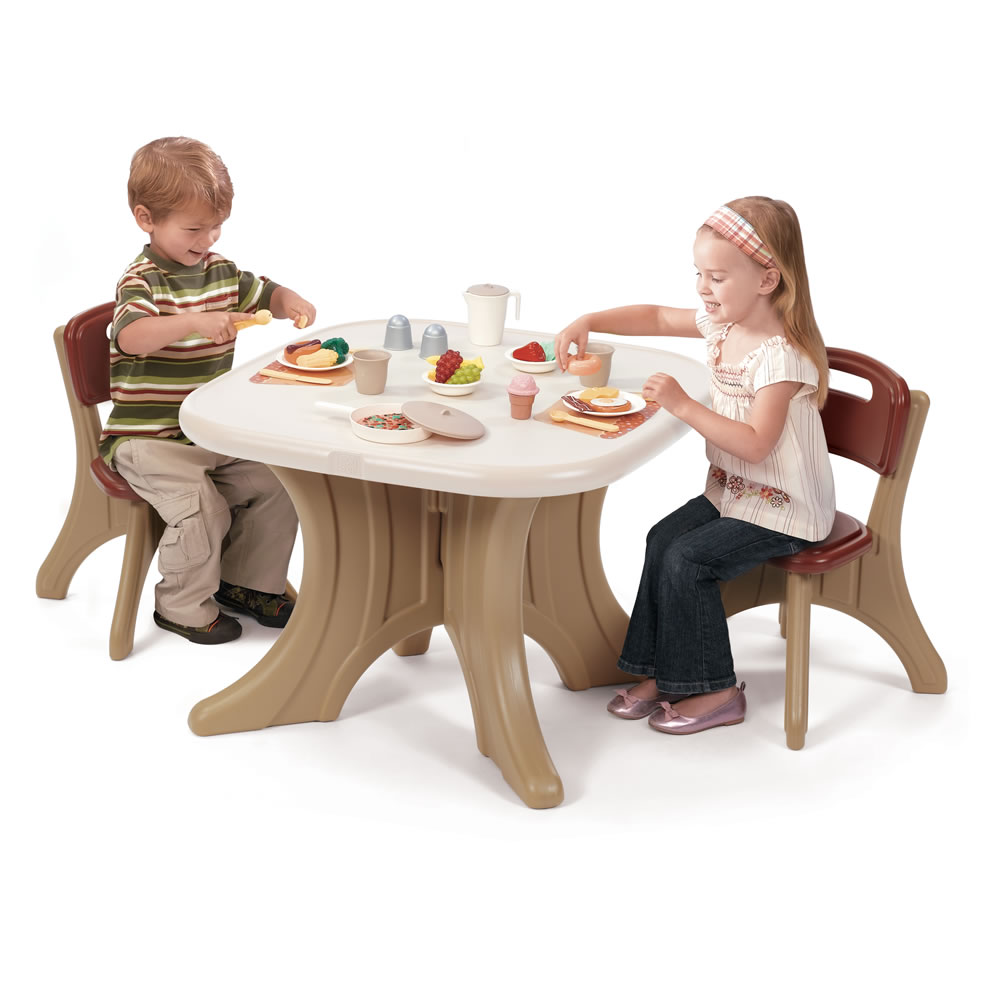
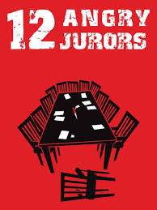
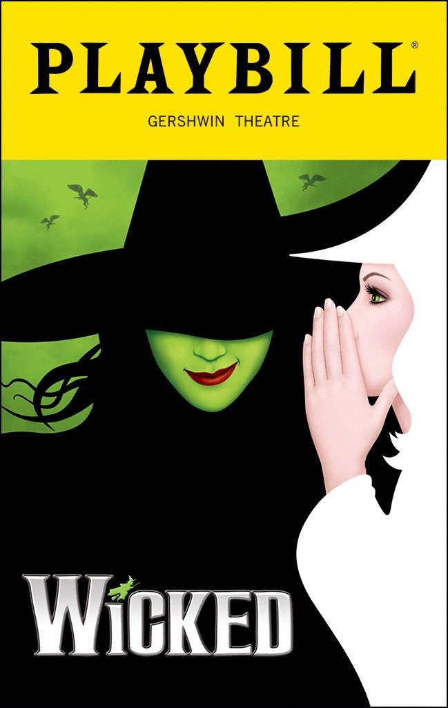

The Young Thespian's School of Musical Theatre aims to provide creative outlets for children, while developing their cognitive ability. With activities such as games, or play analysis, this institution values education over all else. With this focus on education, our students are destined to be the best. And with this theatre school, performance is also of a high importance. Our performance aspect will allow for a freeing atmosphere where students can express themselves. Overall, our school is about art, and education.

Physical development
The studio allows students to express themselves and their creative ideas.
 Social development
Social development
The stage offers a place for students to realize their potential and develop as their own person. Due to the openness of the room, students are able express themselves freely and experience the world through their own two eyes.

Calming atmosphere
The provides a calming atmosphere that allows both adults and the children to relax before the activities start.

Children walk around the room and 1 child is tasked with winking at the others. When someone is winked at, they must fall to the floor. Whoever guesses the person winking wins. This promotes the ideas of trusting and not trusting detains people.

Each child is assigned a different career that they pretend to have, then are sat at a table with a host. The host does not know what each person is. They have to guess the career of each person. This relates to shame and doubt because it takes instinct and self confidence to guess the career; it is best not to doubt yourself.

This play is about a court case and could easily be taught to and read by the older groups. It focuses on a person who is said to be guilty, but ends up getting set free. This play can teach about initiative related to certain choices, and the guilt that people feel for their actions.

Wicked is a good musical that can be related to industry vs inferiority, which is basically good vs bad. This play can be studied and opinions can be shared. A deep analysis of this play can teach kids their own opinions on good and bad, and help them figure themselves out during this stage.